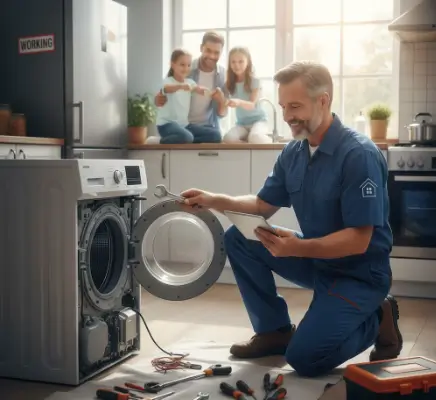

كيف تختار خدمة إصلاح أجهزة منزلية موثوقة محلياً
دليل يساعدك على التعرف على علامات الأعطال، ومقارنة خدمات الصيانة، وطرح الأسئلة المهمة قبل بدء الإصلاح.
عندما يتوقف أحد أجهزتك المنزلية الأساسية عن العمل، يصبح الوصول إلى حل سريع وموثوق أولوية. اختيار خدمة صيانة مناسبة لا يعني إصلاح العطل الحالي فقط، بل يعني أيضًا الحصول على تشخيص واضح، وتنفيذ مناسب، وتقليل احتمالية تكرار المشكلة.
عطل مفاجئ في جهازك؟
تواصل مع التوكيل للصيانة للاستفسار عن العطل وطلب فحص مناسب. يمكنك طلب زيارة فني إلى المنزل، أو زيارة مقر الشركة عند الحاجة.
5 علامات تدل على أن جهازك المنزلي بحاجة إلى صيانة فورية
بعض الأعطال تبدأ بعلامات بسيطة. الانتباه إليها مبكرًا يساعد على منع تفاقم المشكلة.
- أصوات غير طبيعية: صرير أو اهتزاز قوي في الغسالة، أو طقطقة وأصوات جديدة في الثلاجة، قد تشير إلى مشكلة تحتاج إلى فحص.
- زيادة استهلاك الكهرباء: ارتفاع غير مبرر في الاستهلاك قد يكون مرتبطًا بانخفاض كفاءة أحد الأجهزة.
- رائحة احتراق أو دخان: عند ظهور رائحة احتراق أو دخان، افصل الجهاز عن الكهرباء فورًا ولا تحاول تشغيله حتى يتم فحصه.
- ضعف الأداء: مثل عدم تسخين الفرن بالشكل المعتاد أو خروج الملابس من الغسالة بدرجة رطوبة أعلى من الطبيعي.
- تسرب المياه: تسرب المياه من الغسالة أو غسالة الأطباق أو الثلاجة يحتاج إلى معالجة سريعة لتجنب أضرار إضافية.
الفرق بين الصيانة الدورية والإصلاح الطارئ
الصيانة الدورية الوقائية
هي فحوصات وتنظيف وإجراءات مجدولة تهدف إلى الحفاظ على كفاءة الجهاز واكتشاف المشكلات قبل أن تتحول إلى أعطال كبيرة. الصيانة الوقائية تساعد على متابعة حالة المكونات والحفاظ على الأداء.
الإصلاح الطارئ
يبدأ بعد ظهور عطل فعلي أو تراجع واضح في الأداء. هنا يكون الهدف تحديد سبب المشكلة وإعادة الجهاز إلى حالة تشغيل مناسبة بأسرع ما يمكن، مع تحديد ما يحتاجه من قطع أو إصلاح.
كيف تختار خدمة إصلاح أجهزة منزلية موثوقة محليًا؟
- الخبرة والتخصص: اختر جهة لديها خبرة فعلية في نوع جهازك، فطبيعة أعطال الثلاجات تختلف عن الغسالات وغسالات الأطباق والأفران.
- سمعة جيدة: راجع آراء وتجارب العملاء، واهتم بتكرار الملاحظات الإيجابية حول جودة العمل والتعامل.
- وضوح التكلفة: اسأل عن تكلفة الفحص والإصلاح وقطع الغيار قبل اعتماد العمل، قدر الإمكان.
- الضمان: استفسر بوضوح عن الضمان المقدم على الخدمة والقطع، وما الذي يشمله وفق سياسة الشركة.
- الاحترافية: الجهة الجيدة تشرح العطل، وتوضح ما سيتم عمله، ولا تبدأ في استبدال مكونات دون تشخيص مناسب.
ما الأسئلة التي يجب أن تطرحها على فني الأجهزة قبل بدء العمل؟
- ما سبب العطل بالتحديد؟
اطلب شرحًا بسيطًا للمشكلة وما الذي تم فحصه للوصول إلى التشخيص. - هل لديك خبرة بهذا النوع والموديل؟
معرفة الفني بطبيعة الجهاز ومكوناته تساعد في الوصول إلى تشخيص أكثر دقة. - ما التكلفة المتوقعة؟
اطلب توضيح أجرة العمل وقطع الغيار وأي رسوم إضافية محتملة. - هل القطعة أصلية ومناسبة للموديل؟
عند الحاجة إلى استبدال قطعة، اسأل عن نوعها ومدى توافقها مع الجهاز. - كم يستغرق الإصلاح؟
خصوصًا إذا كان الجهاز أساسيًا في المنزل. - ما تفاصيل الضمان؟
اسأل عن المدة وما الذي يشمله الضمان تحديدًا. - ماذا يحدث إذا عاد نفس العطل؟
من المهم معرفة سياسة المتابعة في حالة تكرار المشكلة بعد الإصلاح.
كيف تستعد قبل وصول فني الصيانة إلى منزلك؟
- وفّر مساحة مناسبة حول الجهاز حتى يستطيع الفني فحصه والعمل عليه.
- أبعد الأغراض الموجودة فوق الجهاز أو بجواره.
- اجعل الوصول إلى مصدر الكهرباء والمياه سهلًا قدر الإمكان.
- احتفظ باسم الموديل أو صورة لبيانات الجهاز إذا كانت متاحة.
- صف الأعراض التي ظهرت ومتى بدأت، فهذا يساعد في التشخيص.
هل الأفضل إصلاح الجهاز القديم أم شراء جهاز جديد؟
لا توجد قاعدة واحدة تنطبق على كل الأجهزة. القرار يعتمد على عمر الجهاز، وطبيعة العطل، وتكلفة الإصلاح، وتوفر القطع، وعدد مرات تكرار الأعطال. إذا أصبح الإصلاح مرتفع التكلفة جدًا أو تكررت الأعطال بصورة متقاربة، فمن المفيد مقارنة تكلفة الإصلاح بسعر جهاز بديل قبل اتخاذ القرار.
لا تسيب العطل يكبر
لو جهازك بدأ يطلع صوت غريب، أو أداؤه اتغير، أو حصل تسريب، تواصل مع التوكيل للصيانة لمعرفة الحل المناسب.
أسئلة شائعة
هل إصلاح الجهاز القديم أفضل من شراء جهاز جديد؟
يعتمد ذلك على تكلفة الإصلاح وعمر الجهاز وحالته العامة وتكرار الأعطال. الأفضل تقييم الحالة والتكلفة قبل اتخاذ القرار.
كيف أجهز المكان قبل وصول الفني؟
وفّر مساحة حول الجهاز، وأبعد الأغراض القريبة منه، واجعل الوصول إلى مصادر الكهرباء أو المياه ممكنًا لتسهيل الفحص.
هل يجب دفع تكلفة الإصلاح كاملة مقدمًا؟
سياسة الدفع تختلف من شركة لأخرى ومن حالة لأخرى. اسأل عن رسوم الفحص وتكلفة القطع وطريقة الدفع قبل اعتماد الإصلاح.
هل توفرون خدمة منزلية؟
نعم، يمكن طلب زيارة فني إلى المنزل، كما يمكن للعميل زيارة مقر الشركة حسب طبيعة الجهاز والخدمة المطلوبة.
هل تواجه مشكلة أو عطلاً في جهازك؟
تواصل مع فريق "التوكيل للصيانة" الآن للحصول على استشارة فنية وفحص منزلي فوري بأعلى معايير الدقة والأمان.